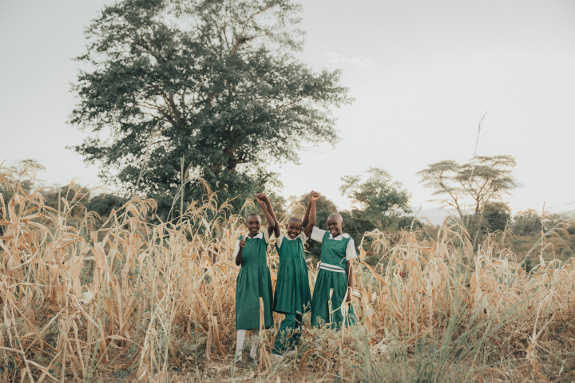

There is still not enough access to clean running water in East Africa. And, new water and agriculture projects are expensive, inefficient and rely on foreign investment.
There is also little opportunity for self-reliant, sustainable income generation in rural East Africa.
Together we can change this and ensure communities have the life essentials they need to thrive.
Practical solutions that communities actually need
Our Model

It starts with clean water
We create water independence and sustainable agriculture solutions to generate economic opportunities in East Africa. For us, it all starts with water. We work relentlessly to alleviate poverty and gender inequities by eliminating the financial and time burden of sourcing clean water.
Learn about our approach ->- 
Financial resilience
Water + Agriculture = Economic Opportunity.
Learn about our solution ->
We work within communities, we listen to their needs and we build capacity within them to sustain projects for the long term. 
Gender equity
Our programs are uniquely designed to directly meet the needs of women and girls, build capacity at the leadership level, and create income-generating opportunities to increase economic access.
Learn about our impact ->
Sustainable development
As special consultants to the United Nations Economic and Social Council (ECOSOC), we are directly addressing the UN Sustainable Development Goals that align with our core work.
Learn about our sustainability ->